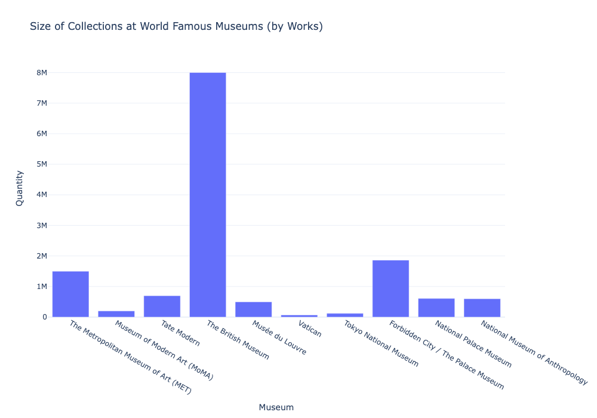
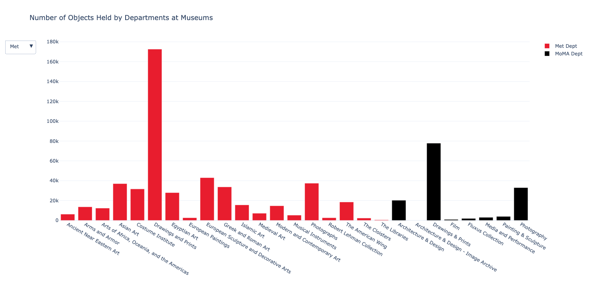
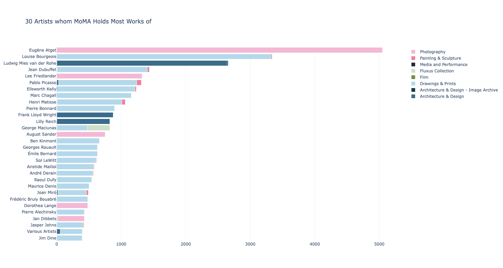

All About Art (AAA)
(Work in Progress)
This project is the final project for a geospatial analysis in Python class. All graphs and analysis are completed in Python.
It aims to look at the arts and cultural infrastructure in New York City and London, including but not limited to art galleries, museums, theatres, and libraries.
The main intention behind this project is to 1) on a city level, promote more equitable access to cultural infrastructure, and 2) on a museum/inidividual organizatioinal level,
promote digitization and open access to virtual galleries and online databases, so more netizens will be able to enjoy art without necessarily visit the physical space (of course, if time and money allow,
the physicality of beinig in the art realm is still irreplaceable.)
This project is planned to be consisting of several parts:
- Spatial distribution of cultural infrastructure and its relation with income
- Accessibility of cultural amenities through Streeet Network analysis
- Museum Collection Highlights: MET, MoMA, and the British Museum
The following graphs belong to Part 3, and were created using Plotly. It showcases some basic analysis of collection sizes at well-known museums worldwide (Fig.1), and departmental (Fig.2) and artist analysis (Fig. 3) at the Metropolitan Museum of Art and Modern Museum of Art. Data sources credited to the two museums' github open access database: https://github.com/MuseumofModernArt and https://github.com/metmuseum/openaccess.
Fig 1 Size of Collections
Fig 2 Met vs. MoMA Departmental Organization & Collection Size
Fig 3 Top Artists whom MoMA Owns the Most Work of
